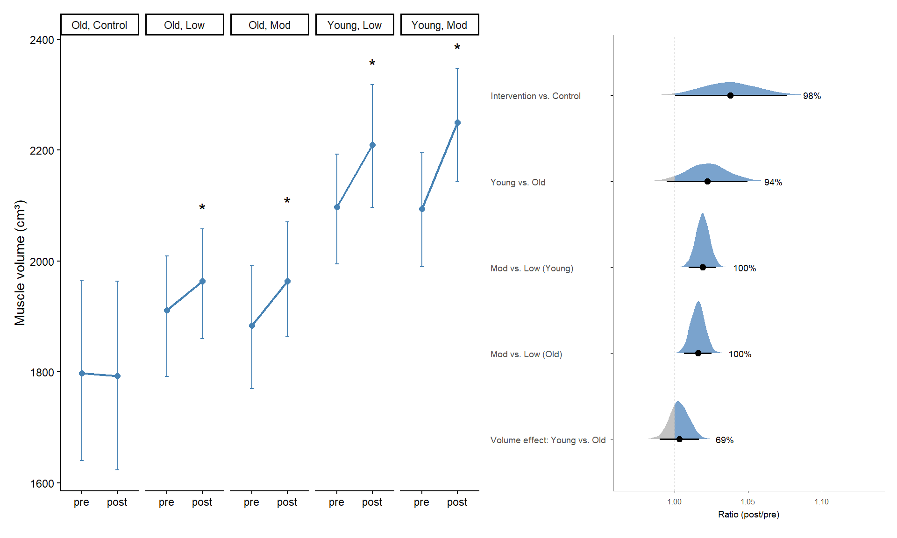
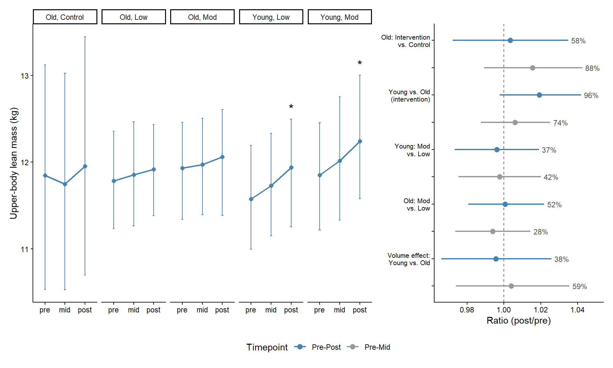
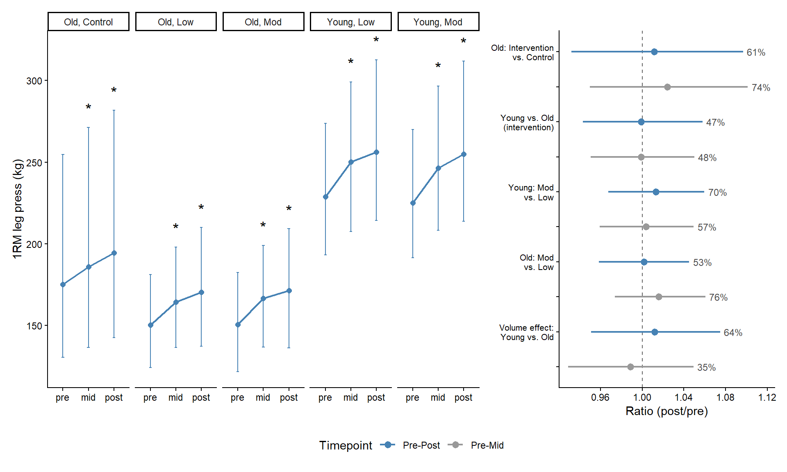
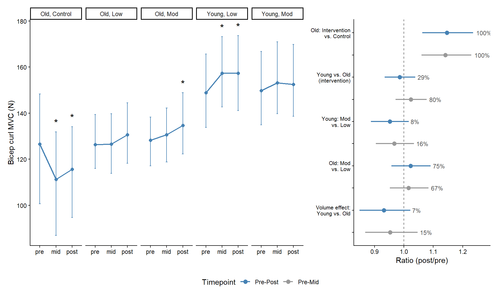
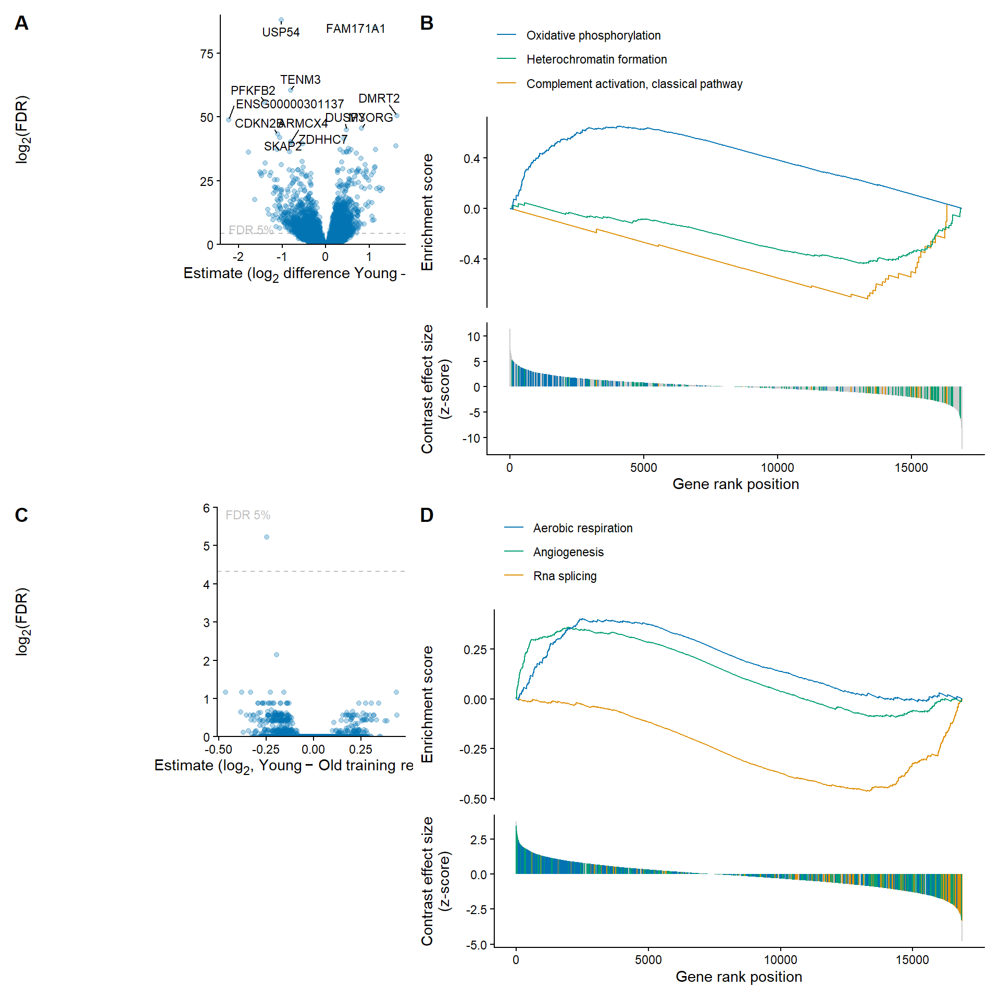

Untitled
Results, in a short format
Muscle Volume
- Old: Intervention vs. Control — weak-moderate evidence (3.8%, pos 97.6%)
- Young vs. Old (intervention) — weak evidence (2.2%, pos 94.0%)
- Young: Mod vs. Low — strong evidence (1.9%, pos >99.9%)
- Old: Mod vs. Low — strong evidence (1.6%, pos 99.9%)
- Volume effect: Young vs. Old — no evidence (0.3%, pos 68.5%)
Muscle Thickness

- Old: Intervention vs. Control — no/weak evidence (post: 4.2%, pos 84.8%; mid: 1.8%, pos 66.0%)
- Young vs. Old (intervention) — weak evidence (post: 2.8%, pos 83.8%; mid: 3.5%, pos 88.7%)
- Young: Mod vs. Low — weak evidence (post: 2.9%, pos 83.9%; mid: 3.3%, pos 88.4%)
- Old: Mod vs. Low — strong evidence (post: 8.8%, pos 99.8%; mid: 7.3%, pos 99.7%)
- Volume effect: Young vs. Old — weak evidence, favoring old (post: pos 91.9% for old>young; mid: pos 84.0%)
Upper-Body Lean Mass

- Old: Intervention vs. Control — no/weak evidence (post: 0.3%, pos 57.8%; mid: 1.6%, pos 87.8%)
- Young vs. Old (intervention) — weak evidence (post: 1.9%, pos 95.5%; mid: no evidence, pos 74.1%)
- Young: Mod vs. Low — no evidence (pos 63.1%)
- Old: Mod vs. Low — no evidence (pos 52.0%)
- Volume effect: Young vs. Old — no evidence at either timepoint (pos 57–60%)
Peak Torque (force–velocity, speed-dependent)

- Old: Intervention vs. Control — weak evidence, all speeds (post: pos 79–86%; mid: pos 75–91%)
- Young vs. Old (intervention) — weak evidence overall; stronger and credible specifically in the low-volume condition (mid: pos 97.7–98.3%; post: pos 91.5–97.1%), not credible under moderate volume
- Young: Mod vs. Low — strong evidence, smaller increase under moderate, all speeds (pos 98.8–99.9%)
- Old: Mod vs. Low — no evidence of difference, any speed (pos ~50–60%)
- Volume effect: Young vs. Old — moderate-strong evidence (less favorable to moderate volume in young) at isometric/60°/120°/s (pos 98.2–99.6%), weak at 240°/s (pos ~94%)
1RM Leg Press

- Old: Intervention vs. Control — no evidence (post: pos 60.6%; mid: pos 73.7%)
- Young vs. Old (intervention) — no evidence (pos ~52%, both timepoints)
- Young: Mod vs. Low — no evidence (pos 70.4%)
- Old: Mod vs. Low — no evidence (pos 53.0%)
- Volume effect: Young vs. Old — no evidence at either timepoint (pos 64–65%)
Bicep Curl MVC

- Old: Intervention vs. Control — strong evidence (post: 14.6%, pos >99.9%; mid: 14.1%, pos 99.9%) — driven mainly by control-group decline
- Young vs. Old (intervention) — no/weak evidence (post: pos 71.1%; mid: pos 80.3%)
- Young: Mod vs. Low — weak evidence, likely smaller under moderate (pos 92.4%)
- Old: Mod vs. Low — no evidence (pos 74.7%)
- Volume effect: Young vs. Old — weak-moderate evidence (post: pos 93.2% for old>young; mid: pos 85.0%)
OGTT

- Old: Intervention vs. Control — credible reduction from ~38 min onward through end of window (pos ~97.5–97.7%)
- Young vs. Old (training response) — credible difference 30–78 min post-ingestion (peak pos 100% at 54 min); not credible outside this window
UBF Protein

- Old: Intervention vs. Control — no evidence (pos 58.6%, wrong direction/not credible)
- Young vs. Old — no evidence (pos 56.8%)
- Young: Mod vs. Low — no evidence (pos 53.9%)
- Old: Mod vs. Low — no evidence (pos 67.8%)
- Volume effect: Young vs. Old — no evidence (pos 67.2%)
c-Myc Protein (high peak)
- Old: Intervention vs. Control — strong evidence (99.8%, pos 99.3%) — driven mainly by control-group decrease
- Young vs. Old — no evidence (pos 61.5%)
- Young: Mod vs. Low — weak evidence (pos 83.5%)
- Old: Mod vs. Low — weak evidence (pos 84.5%)
- Volume effect: Young vs. Old — no evidence (pos 46.7%)
Total RNA
- Old: Intervention vs. Control — no evidence at post (pos 52.4%); weak evidence at w3 (pos 87.6%)
- Young vs. Old — no evidence at post (pos 65.3%); weak evidence at w3 (pos 88.9%, young > old); reverses direction between w3 and post (pos 91.9% for young falling relative to old)
- Young: Mod vs. Low — no evidence at either timepoint (pos 56–66%)
- Old: Mod vs. Low — no evidence at either timepoint (pos 60–67%)
- Volume effect: Young vs. Old — no evidence at either timepoint (pos 57–68%)
RNA-sequencing

- Baseline age difference — large number of genes differentially expressed (FDR<5%); young higher in oxidative phosphorylation, lower in complement activation and heterochromatin formation
- Training effect (baseline→post) — large, broad response in both age groups (thousands of genes each); dominant biology (ECM/collagen up, RNA-processing/ribosome biogenesis down) shared between groups
- Age × training-response interaction — essentially null at the gene level (1 gene at FDR 5%), but GSEA shows subtle magnitude differences (RNA splicing down-regulation, angiogenesis/aerobic respiration up-regulation more pronounced in young)
- Volume effect (Old only) — substantial number of genes differ by volume in old (mitochondrial/oxidative up, contractile/translation down with higher volume); essentially no volume effect detected in young